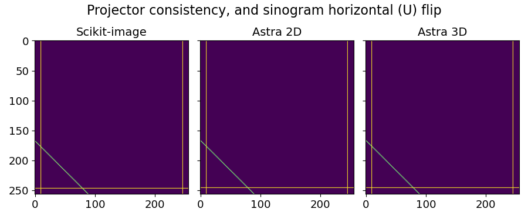

Reconstruction geometry
Here we provide visual ways to assess the correctness of the geometry. In particular, we look at:
Consistency of the projectors in
corrctFlip of the sinogram along the U coordinate
Rotation direction:
clockwisevscounter-clockwiseThe excitation beam direction:
bottom-up,top-down,left-rightwards,right-leftwardsThe position of the XRF detector with respect to the excitation beam:
rightvsleft
Rotation direction and sinogram flip
To produce the relevant figures, we use the following code:
import numpy as np
from matplotlib import pyplot as plt
import corrct as cct
vol_shape = [256, 256]
sino_wu = np.zeros((4, vol_shape[0]))
sino_wu[:, 10] = 1
test_angles = np.deg2rad([0, 45, 90, 180])
with cct.projectors.ProjectorUncorrected(vol_shape, test_angles, backend="skimage") as A:
bp_angles_s = A.bp(sino_wu)
with cct.projectors.ProjectorUncorrected(vol_shape, test_angles, backend="astra") as A:
bp_angles_a = A.bp(sino_wu)
vol_shape = [256, 256, 2]
sino_wu = np.zeros((2, 4, vol_shape[0]))
sino_wu[..., 10] = 1
with cct.projectors.ProjectorUncorrected(vol_shape, test_angles) as A:
bp_angles_3 = A.bp(sino_wu)
The following sinogram will produce a specific type of structure that allows us to determine the rotation direction and the sinogram flip.
fig, axs = plt.subplots(1, 1, figsize=(9, 1))
axs.imshow(sino_wu[0])
axs.set_title("Sinogram", fontsize=14)
axs.tick_params(labelsize=13)
fig.tight_layout()
In the following reconstructions, we can see that the incoming beam comes from
the top of the image, and the rotation direction is counter-clockwise.
The sinogram U axis goes from left to right in the reconstruction volume.

fig, axs = plt.subplots(1, 3, sharex=True, sharey=True, figsize=[9, 3.625])
fig.suptitle("Projector consistency, and sinogram horizontal (U) flip", fontsize=16)
axs[0].imshow(bp_angles_s, vmin=0.0, vmax=1)
axs[0].set_title("Scikit-image", fontsize=14)
axs[1].imshow(bp_angles_a, vmin=0.0, vmax=1)
axs[1].set_title("Astra 2D", fontsize=14)
axs[2].imshow(bp_angles_3[0], vmin=0.0, vmax=1)
axs[2].set_title("Astra 3D", fontsize=14)
for ax in axs:
ax.tick_params(labelsize=13)
plt.tight_layout()
Incoming beam attenuation direction
For a correct attenuation correction of the incoming beam intensity, the acquisition geometry used for computing the attenuation map needs to match the reconstruction geometry from the previous section. The following code can be used to compute and visualize the attenuation maps for the incoming beam intensity at the same angles as for the reconstruction geometry seen above:
vol_shape = [256, 256]
vol_att_test = cct.processing.circular_mask(vol_shape, radius_offset=-80).astype(np.float32)
det_angle_rad = -np.pi / 2
att_vol = cct.physics.attenuation.AttenuationVolume(
incident_local=vol_att_test, emitted_local=None, angles_rot_rad=test_angles, angles_det_rad=det_angle_rad
)
att_vol.compute_maps()
fig, ax = plt.subplots(1, 4, sharex=True, sharey=True, figsize=[9, 2.5])
fig.suptitle("Attenuation IN", fontsize=16)
for ii_a, a in enumerate(test_angles):
att_vol.plot_map(ax[ii_a], ii_a)
ax[ii_a].set_title(f"{np.rad2deg(a)}")
fig.tight_layout()
The red arrow indicates the incoming beam direction, which matches with the geometry of the previous figure.
Detector position (for self-attenuation)
A similar type of technique can be used for determining the geometry of the self-attenuation correction. With the following code, we can compute and visualize the attenuation maps for the emitted photons at the same angles as the reconstruction geometry:
att_vol = cct.physics.attenuation.AttenuationVolume(
incident_local=None, emitted_local=vol_att_test, angles_rot_rad=test_angles, angles_det_rad=det_angle_rad
)
att_vol.compute_maps()
fig, ax = plt.subplots(1, 4, sharex=True, sharey=True, figsize=[9, 2.5])
fig.suptitle("Attenuation OUT", fontsize=16)
for ii_a, a in enumerate(test_angles):
att_vol.plot_map(ax[ii_a], ii_a)
ax[ii_a].set_title(f"{np.rad2deg(a)}")
fig.tight_layout()
The black arrow indicates the detector position, which for the purpose of
self-attenuation correction also coincides with what we call (with an abuse of
terminology) the emitted photon direction.
From this figure, we conclude that the detector sits on the right of the sample,
from the incoming beam perspective.